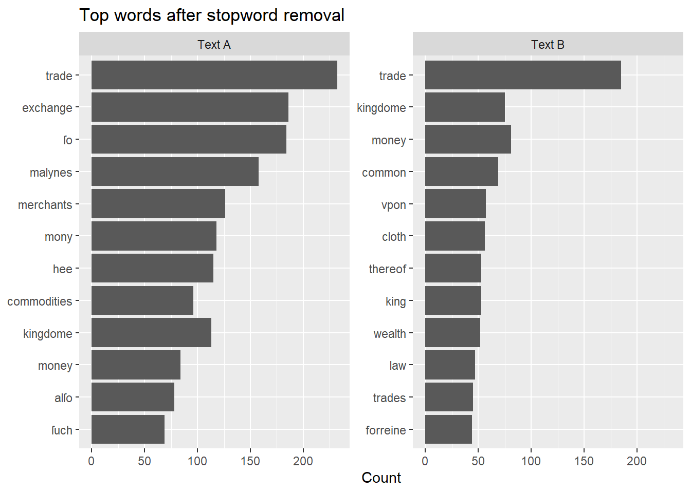

library(readr)
library(dplyr)
library(tidyr)
library(stringr)
library(tidytext)
library(ggplot2)
library(forcats)
library(tibble)
library(scales)Lesson 02: Comparing Two Texts (Words + Bigrams)
What you will learn
In this lesson, we compare two early modern economic texts by examining word frequencies and bigrams.
What you need in your project folder
- Two plain-text files
- The tidyverse and tidytext packages
- A consistent folder structure
Step-by-step: from raw texts to comparison plots
Setup
This lesson assumes you are working inside an RStudio Project (recommended).
We will read two plain-text files, tidy the tokens/bigrams, and compare frequency patterns.
What you need in your project folder
Create a folder named texts/ inside your project. Put these files inside it:
texts/Misselden_Free_Trade.txttexts/Other_Text.txt
(We will refer to them by these exact filenames in the code below.)
# Define file paths (relative to the Quarto project root)
file_a <- "texts/A07594__Circle_of_Commerce.txt"
file_b <- "texts/B14801__Free_Trade.txt"
# Read the raw text files into R
text_a <- read_file(file_a)
text_b <- read_file(file_b)
# Combine into a tibble for tidytext workflows
texts <- tibble(
doc_title = c("Text A", "Text B"),
text = c(text_a, text_b)
)
texts# A tibble: 2 × 2
doc_title text
<chr> <chr>
1 Text A THE CIRCLE OF COMMERCE. The Prooeme. HERODOTVS in his CLIO, reporte…
2 Text B CAP. I. The Causes of the want of Money in England. IT hauing pleas…Cleaning stage: stopwords and tokenization
We will turn each text into a table of one word per row (tokenization).
Then we remove stopwords (common function words) so that the remaining words are more meaningful for comparison.
# Start with tidytext's built-in stopword list
data("stop_words")
# Add early modern and project-specific stopwords (you can expand this list)
custom_stopwords <- tibble(
word = c(
"vnto", "haue", "doo", "hath", "bee", "ye", "thee"
)
)
all_stopwords <- bind_rows(stop_words, custom_stopwords) %>%
distinct(word)
all_stopwords %>% slice(1:10)# A tibble: 10 × 1
word
<chr>
1 a
2 a's
3 able
4 about
5 above
6 according
7 accordingly
8 across
9 actually
10 after word_counts <- texts %>%
unnest_tokens(word, text) %>%
mutate(word = str_to_lower(word)) %>%
anti_join(all_stopwords, by = "word") %>%
count(doc_title, word, sort = TRUE)
word_counts# A tibble: 7,443 × 3
doc_title word n
<chr> <chr> <int>
1 Text A trade 232
2 Text A exchange 186
3 Text B trade 185
4 Text A ſo 184
5 Text A malynes 158
6 Text A merchants 126
7 Text A mony 118
8 Text A hee 115
9 Text A kingdome 113
10 Text A commodities 96
# ℹ 7,433 more rowstop_words <- word_counts %>%
group_by(doc_title) %>%
slice_max(n, n = 12) %>%
ungroup() %>%
mutate(word = fct_reorder(word, n))
ggplot(top_words, aes(x = n, y = word)) +
geom_col() +
facet_wrap(~ doc_title, scales = "free_y") +
labs(x = "Count", y = NULL, title = "Top words after stopword removal")
Bigrams: moving beyond single words
Single-word frequencies tell us what terms are common.
Bigrams allow us to see which words appear together, capturing short phrases and recurring ideas.
A bigram is simply a sequence of two adjacent words.
bigrams <- texts %>%
unnest_tokens(bigram, text, token = "ngrams", n = 2)
bigrams# A tibble: 53,809 × 2
doc_title bigram
<chr> <chr>
1 Text A the circle
2 Text A circle of
3 Text A of commerce
4 Text A commerce the
5 Text A the prooeme
6 Text A prooeme herodotvs
7 Text A herodotvs in
8 Text A in his
9 Text A his clio
10 Text A clio reportes
# ℹ 53,799 more rowsbigrams_separated <- bigrams %>%
separate(bigram, into = c("word1", "word2"), sep = " ")
bigrams_separated# A tibble: 53,809 × 3
doc_title word1 word2
<chr> <chr> <chr>
1 Text A the circle
2 Text A circle of
3 Text A of commerce
4 Text A commerce the
5 Text A the prooeme
6 Text A prooeme herodotvs
7 Text A herodotvs in
8 Text A in his
9 Text A his clio
10 Text A clio reportes
# ℹ 53,799 more rowsbigrams_filtered <- bigrams_separated %>%
filter(
!word1 %in% all_stopwords$word,
!word2 %in% all_stopwords$word
)
bigrams_filtered# A tibble: 7,622 × 3
doc_title word1 word2
<chr> <chr> <chr>
1 Text A prooeme herodotvs
2 Text A clio reportes
3 Text A croesvs king
4 Text A ſonne borne
5 Text A borne dumbe
6 Text A king himſelf
7 Text A imminent danger
8 Text A certaine perſian
9 Text A perſian ready
10 Text A lay violent
# ℹ 7,612 more rowsWe remove bigrams where either word is a stopword, since phrases like “of the” or “and the” are rarely meaningful analytically.
bigram_counts <- bigrams_filtered %>%
count(doc_title, word1, word2, sort = TRUE)
bigram_counts# A tibble: 6,449 × 4
doc_title word1 word2 n
<chr> <chr> <chr> <int>
1 Text B common wealth 48
2 Text A merchants adventurers 35
3 Text B latin alphabet 34
4 Text A low countries 21
5 Text B east india 20
6 Text A free trade 19
7 Text A latin alphabet 17
8 Text A natiue commodities 17
9 Text A forraine commodities 16
10 Text A letters patents 14
# ℹ 6,439 more rowsbigram_counts <- bigram_counts %>%
unite(bigram, word1, word2, sep = " ")
bigram_counts# A tibble: 6,449 × 3
doc_title bigram n
<chr> <chr> <int>
1 Text B common wealth 48
2 Text A merchants adventurers 35
3 Text B latin alphabet 34
4 Text A low countries 21
5 Text B east india 20
6 Text A free trade 19
7 Text A latin alphabet 17
8 Text A natiue commodities 17
9 Text A forraine commodities 16
10 Text A letters patents 14
# ℹ 6,439 more rows